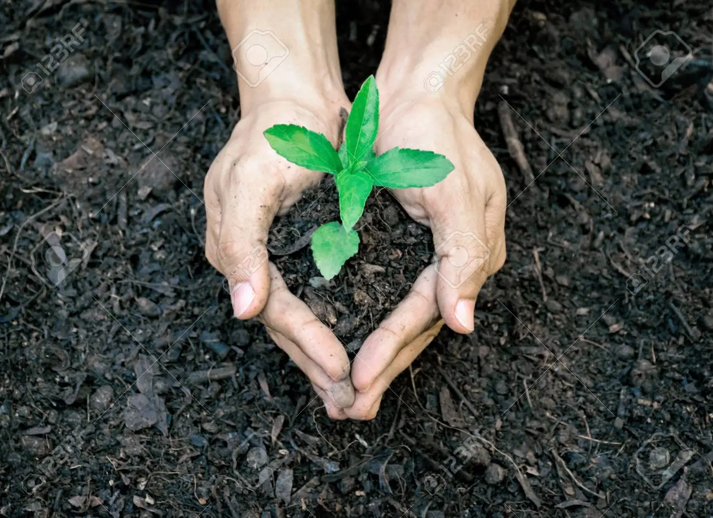

Se encargará de una serie de clases a modo de taller en la que se enseñará sobre la agricultura y el arte, dirigido hacía jóvenes afectados por causa de la pandemia que conllevó una problemática a nivel mundial en el que se dificulta la interacción social. Se pretenderá transmitir un aprendizaje en que las personas involucradas concienticen la lucha por el medio ambiente y a su vez se les brinde el conocimiento necesario para tener una diversa producción agrícola sin necesidad de agrotóxicos y también encontrar un acompañamiento junto este grupo del taller para desarrollar su circulo social.
Es un taller que se dictará en la Casa Ecológica está ubicada dentro del Paseo del Bosque, se tratará acerca del arte y la agricultura. De esta manera, busca fomentar la expresión artística de los jóvenes y la importancia del medio ambiente junto al cuidado social de los individuos.
Se busca enseñar a los jóvenes interesados nociones básicas de la realización de huertas y de cosechar alimentos, hasta la creación de murales vivos pero también el uso de diversas herramientas que acompañarán a los participantes con conocimientos agrícolas. El taller constará de una duración de cuatro horas semanales; dos días por semana.
El taller cuenta con un espacio capacitado para diez o doce personas aproximadamente, en la que se podrá observar y aprender durante las clases. A su vez disponer de los medios suficientes, es decir, herramientas, espacios verdes, agua, iluminación y más; incluyendo una pizarra, necesaria para que se facilite la enseñanza a los alumnos.
Tenemos el fin de ayudar a los jóvenes que fueron afectados por el distanciamiento y orientarlos para cuidar el medio ambiente.
También que el interesado tenga su propio espacio verde con relación a la agricultura y el diseño de los murales vivos.